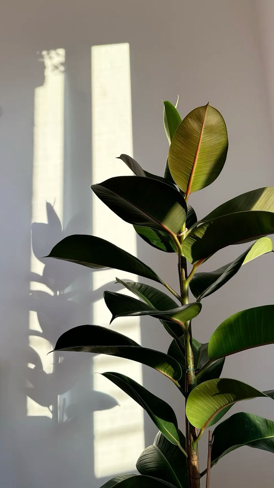
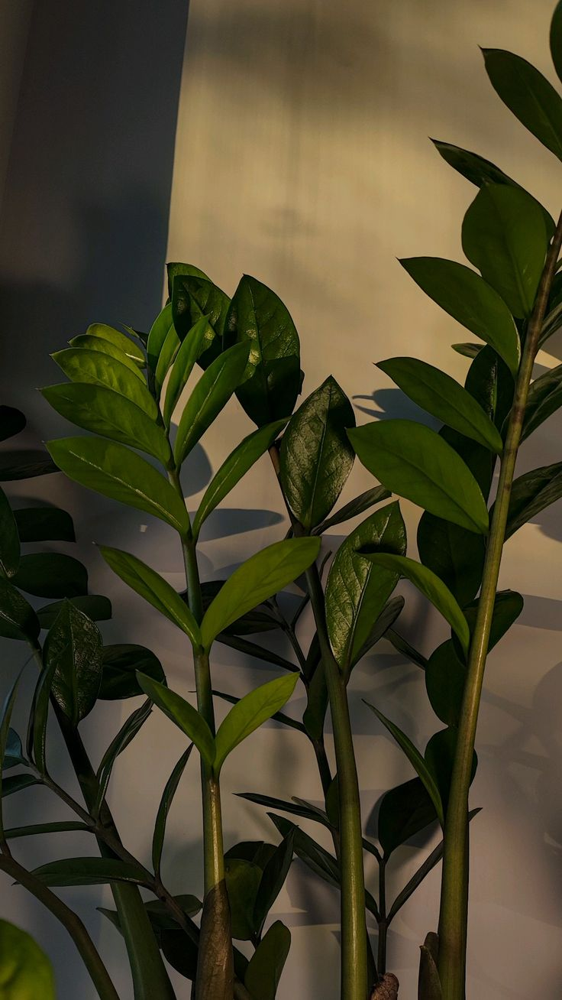

У каждого свой характер
От компактного растения на стол до выразительного акцента в гостиной.
Зелёное — это состояние
Одно растение меняет ощущение целой комнаты. Найдите своего зелёного соседа — мы поможем с первым знакомством.
Не нужно быть ботаником.
Достаточно немного заботы.
От компактного растения на стол до выразительного акцента в гостиной.
Размер, освещение и уход — всё важное собрано в карточке.
Короткие рекомендации, которые легко встроить в обычный день.
Маленький шаг к зелёному дому
Крупные растения
Крупные резные листья и выразительный силуэт. Зелёный акцент для светлого уголка гостиной.
3 490 ₽ 3 990 ₽

Новый листКрупные растения
Плотные глянцевые листья глубокого зелёного цвета. Для спокойного, собранного интерьера.
2 890 ₽
Подробнее ↗
Для начинающихПростые в уходе
Графичные ветви и плотные листья. Хороший первый шаг в домашнее озеленение.
2 490 ₽
Подробнее ↗Растём вместе
Начните с освещения, выбирайте по своему ритму жизни и проверяйте грунт перед поливом. Остальное приходит с опытом.
Небольшой гид по уходу ↗Перед первым листом
Начните с места: оцените освещение, свободное пространство и то, как часто вы готовы проверять грунт. В каталоге есть отдельная подборка растений с простым уходом.
В демонстрационном каталоге указана цена растения в транспортировочном горшке. Декоративное кашпо на фотографии показано как пример оформления.
Выберите растение и заполните форму. Это учебный сайт: данные никуда не отправляются, реальный заказ и оплата не создаются.